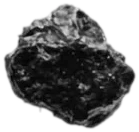
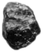
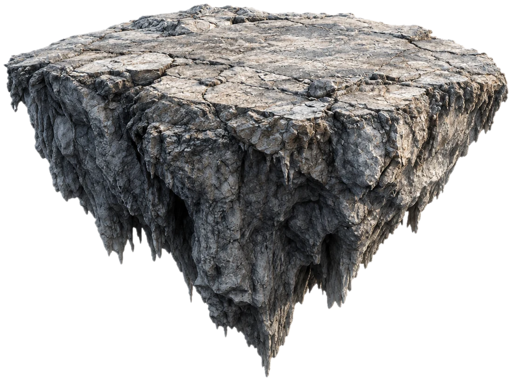
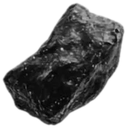
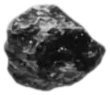
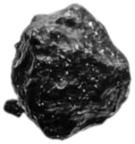
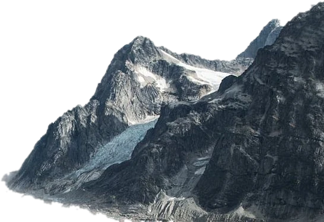

62%
Гнейс
Основа массива. Полосчатый, серо-бежевый, раскалывается плитами. Из него сделана Плита Пастбище.
51°07′ с.ш. · 87°44′ в.д. · хребет Тальвар
Северный склон пика Эзе теряет по камню в год. Обломки не падают, а поднимаются и зависают над долиной. Перед тобой Плита Пастбище, самая большая из них. Говорят, трава на ней растёт там, где её касаются.
Очисти камень и води по нему курсоромОчисти камень и води по нему пальцем






Пик Эзе · северная стена

Вершина · 4 812 м Снежник Белая Чаша Ледник Серебряный язык Зона отрыва камнейЭзе сложена полосчатым гнейсом с жилами кварца и магнетита. Местные зовут гору «Стоящая на одной ноге»: за триста лет северная стена отдала небу больше тысячи камней и стала заметно тоньше южной.
Аномалия «Эзе-поле»
Магнетит в породе реагирует на поле, которое бьёт из-под горы. Когда трещина отделяет кусок стены, он теряет вес и медленно всплывает, как пузырь в мёде. Дальше камень живёт в воздухе годами: дрейфует, вращается, иногда сталкивается с соседями.
Из чего состоит Эзе
62%
Основа массива. Полосчатый, серо-бежевый, раскалывается плитами. Из него сделана Плита Пастбище.
21%
Розоватые линзы у подножия. Самая твёрдая часть горы: гранитные камни почти не взлетают.
9%
Белые жилы толщиной с ладонь. В ясный день они блестят так, что их видно из долины за 30 км.
6%
Чёрные зёрна, из-за которых камни теряют вес. Компас на северной стене крутится без остановки.
2%
Ледник в кулуарах и мох на вершинах парящих плит. Тонкий слой, но только он здесь живой.
Хроника наблюдений
Пастух Аким Чеботарь рассказывает в долине о «камне, который ушёл в небо». Ему никто не верит.
Первое восхождение. Связка Левандовской и Оруджева девять дней идёт по северной стене и ночует под парящей плитой.
Геологи находят в гнейсе жилы магнетита и поле в сорок раз сильнее нормы. Аномалию называют «Эзе-поле».
На седловине открывают станцию «Эзе-3». С неё каждый камень получает номер, имя и карточку.
На Плите Пастбище замечают траву. По версии ботаников, семена принесли клушицы, которые гнездятся на камнях.
В марте от стены отрывается обломок №1280. Его называют «Последний», хотя все понимают, что это не так.
Реестр станции «Эзе-3»